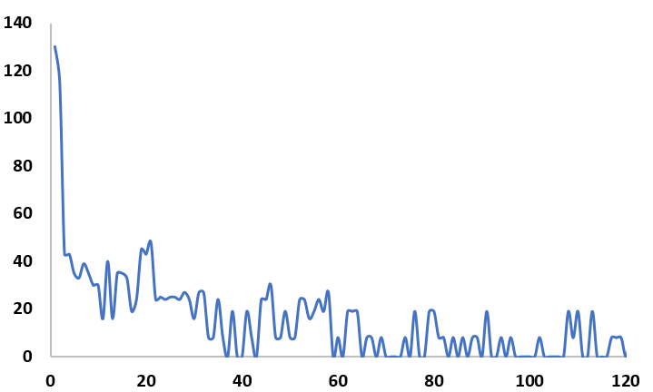
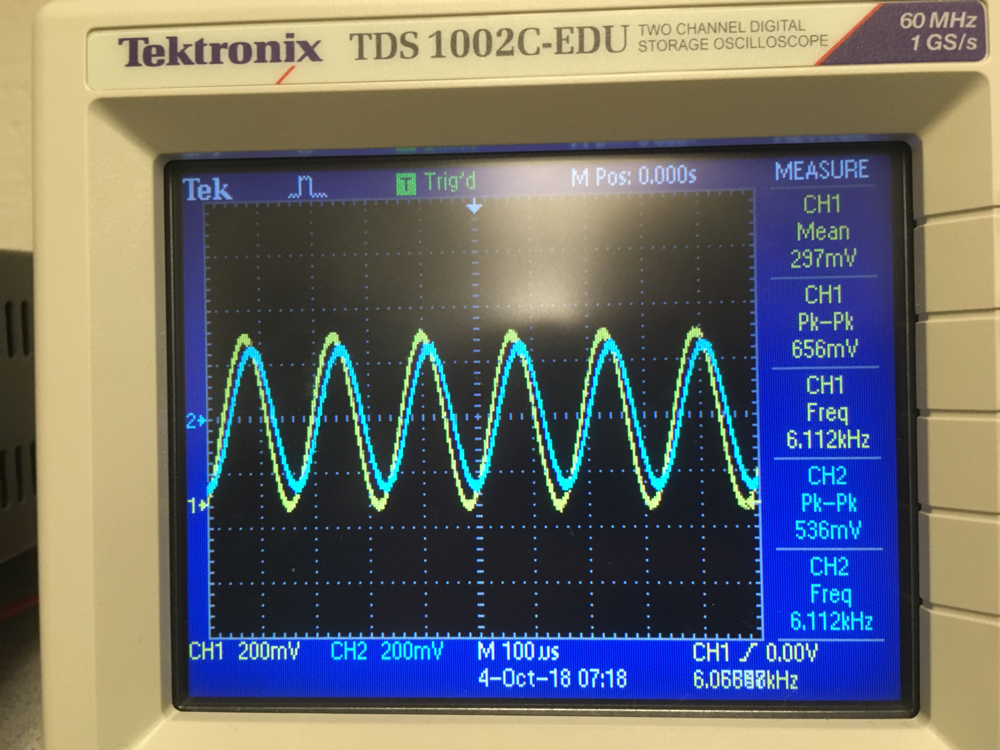
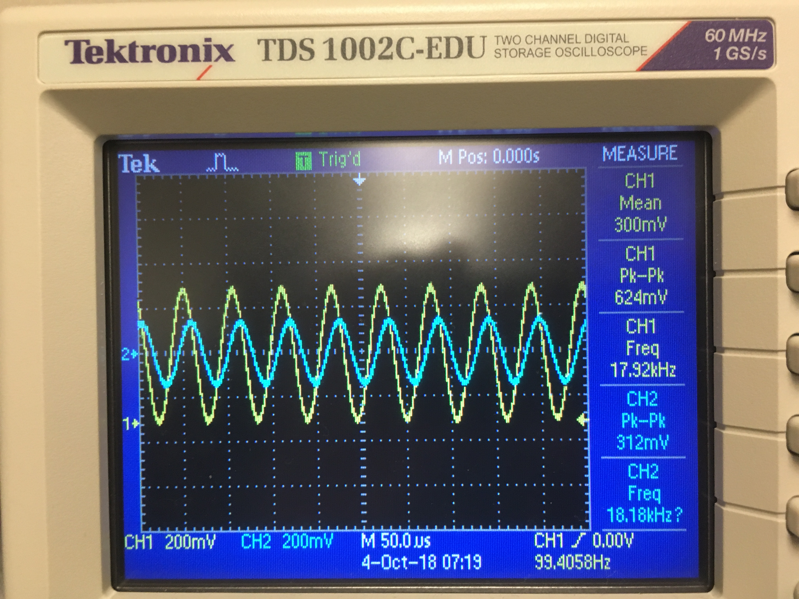
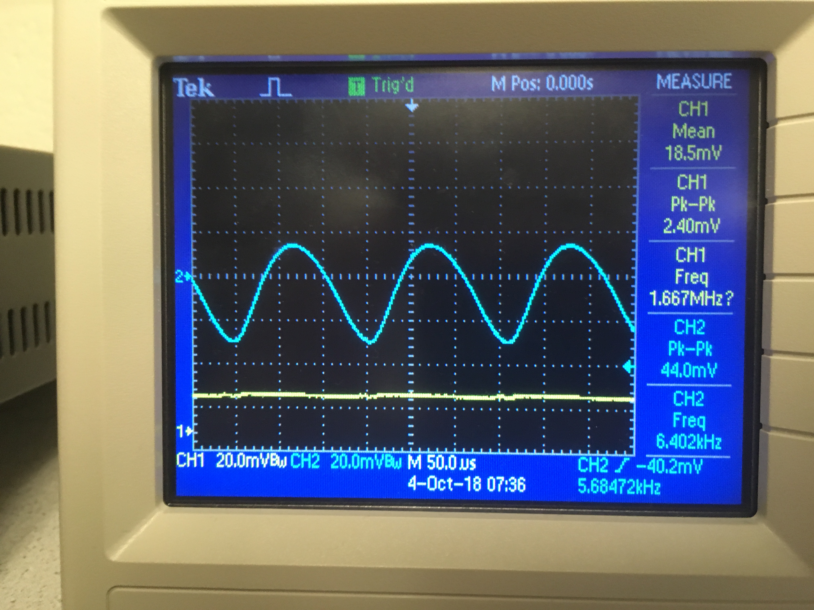
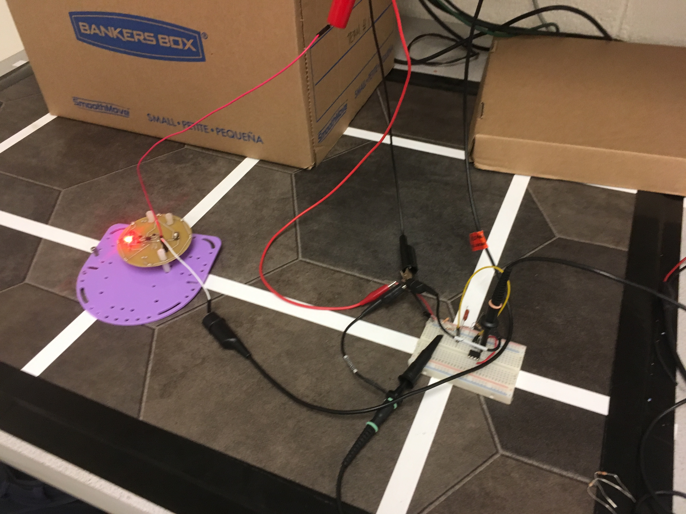
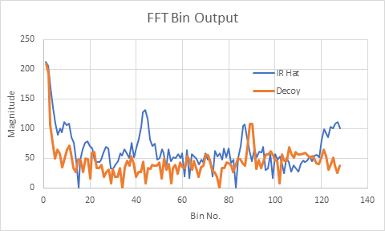

Team Tasks
* Acoustic Team: Asena, Laasya
* Optical Team: Cynthia, Robert, Nonso
Lab Description
In this lab, we added sensors and circuitry to our robot. The first was a microphone circuit that detects a 660Hz signal, this signal will be used to signify the start of the final competition. The second was an IR circuit that detects a 6.08kHz signal, a frequency that will be emitted by other robots during the competition. For both circuits, we need to be able to distinguish the desired frequency from decoys.
Part 1: Acoustic
Team Materials
* 1 Arduino Uno
* Electret microphone
* Capacitors and resistors of our choosing
We started the lab by assembling the microphone circuit suggested by the lab handout with a 1 µF capacitor and a 3.3 kΩ resistor:

We then used a tone generator app to play a 660Hz tone directly into the microphone at maximum volume, then checked the output of the circuit using the oscilloscope.
We were able to see our 660Hz signal on our oscilloscope with great difficulty, because the microphone also picked up all other noise in the room.
Then, we started looking at how to amplify our desired signal and squash other signals. We decided to feed the output of our microphone into an active band pass filter.
We started by building Team Alpha's circuit, and then adding an additional capacitor for more filtering.
Here is a picture of our circuit and a diagram:


After building our circuit, we modified the example sketch from the FFT library, fft_adc_serial, to use analogRead(), the built-in method for reading an analog input, instead of running the ADC in free-running mode. The frequency 660Hz is in the 5th bin using the ADC, but in the 20th bin using analogRead() because analogRead() runs at a much slower sampling rate. The code is shown below:
#define LOG_OUT 1 // use the log output function
#define FFT_N 256 // set to 256 point fft
#include // include the library
void setup() {
Serial.begin(115200); // use the serial port
}
void loop() {
while (1) { // reduces jitter
Serial.println("FFT from pin A1");
runFFT("A1");
while(1);
}
}
void runFFT(uint8_t pin) {
cli(); // UDRE interrupt slows this way down on arduino1.0
for (int i = 0 ; i < 512 ; i += 2) { // save 256 samples
fft_input[i] = analogRead(pin); // put analog input (pin A0) into even bins
fft_input[i + 1] = 0; // set odd bins to 0
}
fft_window(); // window the data for better frequency response
fft_reorder(); // reorder the data before doing the fft
fft_run(); // process the data in the fft
fft_mag_log(); // take the output of the fft
sei();
for (byte i = 0 ; i < FFT_N / 2 ; i++) {
Serial.println(fft_log_out[i]); // send out the data
}
}
We later merge our code with the code for detecting the 6kHz IR signal.
We first used the signal generator to put a 660Hz, 50mVpp with 25mV offset sine wave into our active band pass filter. We fed the output into pin A1 and ran our modified code for FFT. We got the output from the serial monitor and plotted it in Excel. We then played a 660Hz tone from the app Tone Generator directly into our microphone. We got the output and plotted in in Excel. The two plots are shown below:
There is a peak of similar amplitude in the fifth pin from the 660Hz from the signal generator and the 660Hz from the tone generator app. This shows that our circuit is able to detect a 660Hz tone.
We then played the 660Hz tone into our microphone again and checked the output using the oscilloscope.
The setup and oscilloscope looked as follows:


The frequency of the output measured by the oscilloscope was 660Hz and the voltage was 1.42 Vpp.
We then tested our circuit by playing both a 400 Hz tone and 660 Hz tone at the same volume into the microphone. We got the following FFT out of the Arduino:

The largest peak is still at bin 20, the bin that represents 660 Hz :)
Part 2: Optical
Team Materials
* 1 Arduino Uno
* IR transistor (OP598)
* 1 IR hat (given by TAs)
* 1 IR decoy
* Capacitors and resistors of our choosing
Circuit Design and Construction

The circuit consists of three distinct stages. The photodetector, a low-pass filter, and a non-inverting amplifier. Each stage is discussed below.
We decided to deviate from the default configuration given to us on the lab handout, reversing the positions of the photodetector and 1.8 kΩ resistor. With a 5V pull up, the detector could only pull down the voltage in pulses by about half a volt, resulting in a pulse ranging from 4 to 5V at maximum intensity (i.e. with the IR hat right next to the detector). However, reversing this configuration, we had a baseline of 0V and the detector would pull up our value instead, resulting in a 0-1V range at maximum intensity. In this range, an amplifier becomes much more advantageous.

The second stage is a simple RC low-pass filter. With resistor and capacitor values as shown, it has a corner frequency at roughly 10 kHz. These values were chosen so the filter would pass 6 kHz frequencies while rejecting frequencies at 18 kHz. With this configuration, we were able to cut the amplitude of 18kHz signals to less than 50% while keeping 6kHz signals within 10% of their initial amplitude. This filter, along with software on the board not checking bins corresponding to 18 kHz, allows us to reject the decoy signal.


The third stage is a non-inverting amplifier with a gain of 51x. With a maximum range of 0-1 V, there is a possibility of the output signal clipping at the rails of the Op-Amp (0 and 5 V). This issue of clipping is not a significant concern, as we are prioritizing early detection. That is to say, we want to be able to see the robot from far away and react, and our reaction should avoid the case where the detector gets close enough to the other IR hat for clipping to be an issue (i.e. a collision). With a gain of 51x, our circuit can readily detect an IR hat at a distance of 1 square away (30cm). It’s possible that we could increase this gain further to increase our detection range but this will depend on our specific needs for detecting other robots down the line.


Detecting the 6.08 kHz signal
Every robot maneuvering the maze - our robot as well as the competition's - will have an IR hat mounted at exactly 5.5 inches from the surface that the robot will move across. The IR hats emit at a frequency of 6.08 kHz. Being able to detect this signal at this particular frequency is our means of detecting whether another robot is in the path of our robot. If detected, our robot should turn/move accordingly in order to prevent a collision. Our robot also needs to be able to detect frequencies of 18 kHz, which will be emitted by a decoy. As outlined above, our circuit rejects the decoy frequency by the use of a low-pass filter with a cut-off frequency much below that of the decoy frequency.
To be able to detect the 6.08 kHz signal, we feed the output of our circuit as an analog input to the Arduino. To analyze the signals being read in by the phototransistor, we utilized the Arduino FFT library and modified the fft_adc_serial example sketch. The Arduino FFT library is a quick implementation of a standard FFT algorithm which operates on only real data. We used the FFT library to take in a 16-bit input organized amongst 256 frequency bins and gives an 8-bit logarithmic output. The Fast Fourier Transform (FFT) algorithm samples our signal and decomposes it into its various frequency components. Each component is a sinusoid at a particular frequency with its own amplitude and phase. After running the FFT algorithm using the fft_adc_serial sketch on our input, we were able to graph the logarithmic output vs. the signal input data. Also included on this graph are the results for the 18kHz decoy for comparison:

FFT Analysis
The modified fft_adc_serial sketch is included below. As can be seen in the graph above, there are spikes in frequency starting around bin 40 and the amplitude of the output goes above 100. This spike is due to the 6.08 kHz IR signal that is emitted from the IR hat. Therefore, to be able to detect the presence of the emitted IR hat signal we added a conditional statement to the fft_adc_serial sketch which checks the magnitude of the output fft_log_out at a particular range of indices, or bins. After the FFT is computed, the output for bins ranging from 38 up to 48 are checked for a magnitude greater than 100. If True, we print to the serial monitor that the 6.08 kHz was detected.
Code for handling both IR and Audio
The code snippet below handles both IR and Audio:
- distinguishes a 6.08 kHz IR signal from a 18kHz IR signal
- distinguishes a 660Hz tone from background noise (talking/music)
We originally ran the fft_adc_serial code separately for the optical and acoustic teams, but then merged the code at the end. We first run the FFT taking input from pin A0, by setting ADMUX = 0x40, then run the FFT taking input from pin A1 (ADMUX = 0x41). We connected the microphone circuit's output to pin A0 and then check for a peak in bin 5, representing a tone of 660 Hz. We connected the IR circuit's output to pin A1 and check bins 38-48 for a peak, representing a signal of 6.08 kHZ.
/*
fft_adc_serial.pde
guest openmusiclabs.com 7.7.14
example sketch for testing the fft library.
it takes in data on ADC0 (Analog0) and processes them
with the fft. the data is sent out over the serial
port at 115.2kb.
*/
#define LOG_OUT 1 // use the log output function
#define FFT_N 256 // set to 256 point fft
#include // include the library
void setup() {
Serial.begin(115200); // use the serial port
TIMSK0 = 0; // turn off timer0 for lower jitter
ADCSRA = 0xe5; // set the adc to free running mode
ADMUX = 0x40; // use adc0
DIDR0 = 0x01; // turn off the digital input for adc0
}
void loop() {
while(1) { // reduces jitter
runFFT();
if(fft_log_out[5] > 40) {
Serial.println("660 Hz signal detected");
}
ADMUX = 0x41; //now read from pin A1
runFFT();
// checks bins in the range 38-48
for(int i = 38; i < 48; i++){
if(fft_log_out[i] > 100) {
Serial.println("6.08 kHz signal detected!");
break;
}
}
while(1);
}
}
void runFFT() {
cli(); // UDRE interrupt slows this way down on arduino1.0
for(int i = 0 ; i < 512 ; i += 2) { // save 256 samples
while(!(ADCSRA & 0x10)); // wait for adc to be ready
ADCSRA = 0xf5; // restart adc
byte m = ADCL; // fetch adc data
byte j = ADCH;
int k = (j << 8) | m; // form into an int
k -= 0x0200; // form into a signed int
k <<= 6; // form into a 16b signed int
fft_input[i] = k; // put real data into even bins
fft_input[i+1] = 0; // set odd bins to 0
}
fft_window(); // window the data for better frequency response
fft_reorder(); // reorder the data before doing the fft
fft_run(); // process the data in the fft
fft_mag_log(); // take the output of the fft
sei();
Serial.println("start");
for(byte i = 0 ; i < FFT_N/2 ; i++) {
Serial.println(fft_log_out[i]); // send out the data
}
}